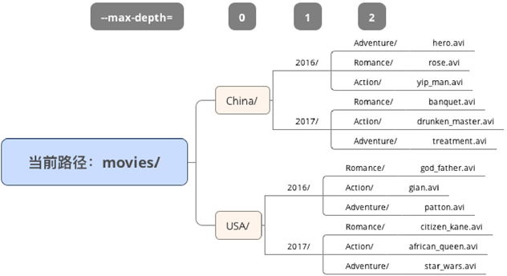

首页 > 编程笔记
du命令_Linux du命令：查看文件夹和文件的磁盘占用情况
du 命令，全称是 disk usage，用来展示磁盘使用量的统计信息。
du 和 df 算是一对同门师兄弟，du 侧重在文件夹和文件的磁盘占用方面，而 df 则侧重在文件系统级别的磁盘占用方面。这两个命令都非常的基础，也是每位 Linux 工程师都应该掌握的命令。
这里有一个比较有意思的事情，在 Linux 命令中，
而
当然，
在运维中，我们通常需要计算某一段时间范围内的日志文件的磁盘使用量，那么
我们绘制了一个示意图，movies 文件中存储了中美两国 2016 年和 2017 年的一些电影大片，而且是按照类型来分的，包括探险片、爱情片、动作片。从图 1 中可以看出，movies 文件夹中共有 3 级子文件夹。
从图 1 中，我们可以很清晰地看到，当 --max-depth 是 0、1、2 时，du 分别对应哪一目录层级。
我们通过下面的例子，来实际看一下 --max-depth 的效果。
如果想让 du 也关心单个的文件，有两种方法：
当然，学会了 --exclude 选项后，你完全可以根据自己的需求去过滤掉其他文件和文件夹了。
这里补充一个 sort 的知识点，那就是
首先，要明确的是，du 的默认单位是 KB，也就是 1024bytes。我们来看一个例子。
但 du 的单位，其实并没有这么简单，有不少只幕后黑手都可能会控制它，我们来一一曝光它们：
下面我们就用一个活生生的例子，先把这个“奇观”给大家展示出来。
du 命令的作者也太粗心了吧，竟然连字母个数都数不清么？冤枉啊！其实，du 和 ls 在展示文件大小时，是存在着本质区别的：
可能这两句话还不足以让你理解两者的区别，我们举一个形象的例子。中秋节时，中国人走亲访友时都会购买月饼礼盒，月饼的体积可以认为是文件内容大小，而加上包装礼盒的总体积可以认为是磁盘空间使用量。
那么，在 Linux 的世界里，每个文件也要有包装么？要想解答这个问题，我们就要简单介绍下 Linux 文件系统的原理了。文件系统进驻磁盘之初，就会将磁盘按照固定数据块（block）大小进行分隔切块，通常情况下每一个固定数据块大小会被设定为 4096bytes，也就是 4KB。
与此同时，大部分文件系统规定：
讲到这里，相信你应该有所领悟了，正是因为这样的管理规则，使得 du 和 ls 在大小展示上出现了差异。
我们再回过头来看一下刚才那个例子：
文件 myword 中只有三个字符，两个可见字符（ab）和一个控制字符（$），因此，这个文件的内容大小就是 3bytes，但是限于 Linux 文件系统的限制，它需要占用一个数据块来存储这个文件，因此这个文件实际占用的磁盘空间就是 4KB 了。
这种情况使得 du 往往会比 ls 展示的文件大小要大一些。但是，还存在一种情况，那就是 du 展示的数值比 ls 展示的数值要小，这种现象，你知道原因么？
这是怎么做到的呢？让我们来亲手造一个“空洞”，一起见证奇迹（会用到 dd 命令）：
我们为大家展示了“du 的值远小于 ls 值的情况”，因为一个文件中的空洞，并不实际占用磁盘空间，但是这个空洞本身会被认为是文件内容的一部分，所以 ls 的值才会显示得那么大，而 du 的值还是会保持原大小。
多说一句，一个存在空洞的文件，官方术语叫作“稀疏文件”，英文叫作“sparse file”，它本质上是由文件偏移来控制的，如果对这个奇观感兴趣，可以去深入研究《UNIX 环境高级编程》，里面有更深入的描述和解释。
du 和 df 算是一对同门师兄弟，du 侧重在文件夹和文件的磁盘占用方面，而 df 则侧重在文件系统级别的磁盘占用方面。这两个命令都非常的基础，也是每位 Linux 工程师都应该掌握的命令。
du 的最常用用法
最常用的用法，当然就是查看当前所在文件夹的总磁盘占用量了。#列出当前目录下的文件和子文件夹 [roc@roclinux ruanjian]$ ls -F curl-7.34.0.tar.gz soft/ wordpress-4.4.1.tar.gz #计算当前文件夹的总磁盘占用量, -s选项表示计算总和, -h选项表示以恰当的K/M/G单位展示 [roc@roclinux ruanjian]$ du -sh . 51M
这里有一个比较有意思的事情，在 Linux 命令中，
-h选项常常代表“展示帮助信息”，即 --help 的缩写形式。但是，du 命令却不走寻常路，它的-h选项是 --human-readable 的缩写形式，表示以人类可读的形式展示磁盘使用量的单位名称（K/M/G）。
说说 -s 选项和 -c 选项的作用
-s选项，是 --summarize 的缩写形式，其作用是对 du 的每一个给定参数计算其磁盘使用量，我们来看例子。
#当前文件夹下有2个tar.gz文件和1个soft文件夹 [roc@roclinux ruanjian]$ ls -F curl-7.34.0.tar.gz soft/ wordpress-4.4.1.tar.gz #通配形式的参数首先被Shell解析, 然后-s选项发挥作用, 展示每一个参数对应的磁盘空间使用量 [roc@roclinux ruanjian]$ du -sh * 3.4M curl-7.34.0.tar.gz 41M soft 6.8M wordpress-4.4.1.tar.gz
而
-c选项，是 --total 的缩写形式，它表示的是针对输出的各个对象来计算其磁盘使用量的总和。比如，我们想计算当前文件夹下所有后缀是 tar.gz 的文件的磁盘使用量总和，那么命令是这样的：
[roc@roclinux ruanjian]$ du -ch *.tar.gz 3.4M curl-7.34.0.tar.gz 6.8M wordpress-4.4.1.tar.gz 11M 总用量可以看到，最后一行展示出的 11M，便是
-c选项起到的求和作用。当然，
-c选项也可以计算文件和文件夹的混合求和：
[roc@roclinux ruanjian]$ du -ch curl-7.34.0.tar.gz soft 3.4M curl-7.34.0.tar.gz 41M soft 45M 总用量
在运维中，我们通常需要计算某一段时间范围内的日志文件的磁盘使用量，那么
-c选项就可以很好地满足需求了。
用 --max-depth 选项控制深度
文件夹是可以嵌套的，有的时候，我们只想展示第一级或第二级子文件夹的信息，而不希望 du 统计的层次太深，那么我们可以用 --max-depth 选项来进行控制。我们绘制了一个示意图，movies 文件中存储了中美两国 2016 年和 2017 年的一些电影大片，而且是按照类型来分的，包括探险片、爱情片、动作片。从图 1 中可以看出，movies 文件夹中共有 3 级子文件夹。

图1
图1
从图 1 中，我们可以很清晰地看到，当 --max-depth 是 0、1、2 时，du 分别对应哪一目录层级。
我们通过下面的例子，来实际看一下 --max-depth 的效果。
#我们模拟了和图8完全一致的目录结构
[roc@roclinux movies]$ tree
.
|-- China
| |-- 2016
| | |-- Action
| | | `-- yip_man.avi
| | |-- Adventure
| | | `-- hero.avi
| | `-- Romance
| | `-- rose.avi
| `-- 2017
| |-- Action
| | `-- drunken_master.avi
| |-- Adventure
| | `-- treatment.avi
| `-- Romance
| `-- banquet.avi
`-- USA
|-- 2016
| |-- Action
| | `-- gian.avi
| |-- Adventure
| | `-- patton.avi
| `-- Romance
| `-- god_father.avi
`-- 2017
|-- Action
| `-- african_queen.avi
|-- Adventure
| `-- star_wars.avi
`-- Romance
`-- citizen_kane.avi
#当--max-depth设定为0时, 只显示当前文件夹总大小
#可见, --max-depth=0的作用, 相当于-s
[roc@roclinux movies]$ du --max-depth=0 -h .
5.2G
#当--max-depth设定为1时, 则增加显示了第一级的文件夹大小
[roc@roclinux movies]$ du --max-depth=1 -h .
2.7G ./China
2.5G ./USA
5.2G .
#当--max-depth设定为2时, 则会继续增加显示下一级子文件夹
[roc@roclinux movies]$ du --max-depth=2 -h .
1.4G ./China/2017
1.3G ./China/2016
2.7G ./China
1.2G ./USA/2017
1.3G ./USA/2016
2.5G ./USA
5.2G .
以此类推，大家应该能够理解 --max-depth 的作用了吧。
-a 选项让 du 更博爱
默认情况下，du 命令只会关心文件夹，输出的都是文件夹的空间使用量，而不会关注单个文件。如果想让 du 也关心单个的文件，有两种方法：
- 通过参数形式直接指定
-
通过
-a选项让 du 输出包括文件夹和文件在内的完整统计信息
#如果不指定-a选项 [roc@roclinux ruanjian]$ du -h . 41M ./soft 51M . #指定了-a选项之后, du则会刨根问底儿地把所有文件夹和文件都展示出来 [roc@roclinux ruanjian]$ du -ah . 6.8M ./wordpress-4.4.1.tar.gz 3.4M ./curl-7.34.0.tar.gz 980K ./soft/redis-2.6.16.tar.gz 40M ./soft/go1.1.2.Linux-amd64.tar.gz 41M ./soft 51M .
-a选项的威力还是很大的，即便是隐藏文件也会被囊括进来的，这时，有些用户的问题就随之而来了……
我想排除隐藏文件和隐藏文件夹，该怎么做
我猜就会有同学问这个问题的，所以，早就准备好了解决方案，是通过 du 的另一个重要参数 --exclude 来实现的。#我们随意模拟了几个隐藏的文件和文件夹 [roc@roclinux ruanjian]$ du -ah . 6.8M ./wordpress-4.4.1.tar.gz 3.4M ./curl-7.34.0.tar.gz 980K ./soft/redis-2.6.16.tar.gz 40M ./soft/go1.1.2.Linux-amd64.tar.gz 120K ./soft/.abc 0 ./.bbc/ddd 0 ./.bbc/.ccc 51M . #用--exclude的一个很简单的正则匹配, 就可以完美解决问题啦 [roc@roclinux ruanjian]$ du -ah --exclude="*/.*" . 6.8M ./wordpress-4.4.1.tar.gz 3.4M ./curl-7.34.0.tar.gz 980K ./soft/redis-2.6.16.tar.gz 40M ./soft/go1.1.2.Linux-amd64.tar.gz 41M ./soft 51M .
当然，学会了 --exclude 选项后，你完全可以根据自己的需求去过滤掉其他文件和文件夹了。
什么文件占满了我的磁盘
磁盘被占满，是 Linux 工程师经常遇到的问题，如果能够熟练使用 du 和 sort 形成组合拳，那么找到元凶并非难事。#只想看当前文件夹下第一级的大小排序 [roc@roclinux ruanjian]$ du -sh *|sort -nr 41M soft 6.8M wordpress-4.4.1.tar.gz 3.4M curl-7.34.0.tar.gz #想看当前文件夹和其子文件夹下的大排序 [roc@roclinux ruanjian]$ du -ah .|sort -hr 51M . 41M ./soft 40M ./soft/go1.1.2.Linux-amd64.tar.gz 6.8M ./wordpress-4.4.1.tar.gz 3.4M ./curl-7.34.0.tar.gz 980K ./soft/redis-2.6.16.tar.gz
这里补充一个 sort 的知识点，那就是
-h选项和-n选项的区别：
-
-n选项，按数值进行比较，只会傻傻地比较数字，它会认为 98 K大于 2G。 -
-h选项，会更加聪明，先优先比较单位（G>M>K），然后再对数值进行比较。
单位名称那些事
du 命令的单位名称有必要单独拿出来说说，这里面还是有不少坑的。首先，要明确的是，du 的默认单位是 KB，也就是 1024bytes。我们来看一个例子。
#这里的单位就是KB, 按1KB=1024bytes计算, 是3530752bytes [roc@roclinux ruanjian]$ du curl-7.34.0.tar.gz 3448 curl-7.34.0.tar.gz #而这里可以很清楚地看到是MB [roc@roclinux ruanjian]$ du -h curl-7.34.0.tar.gz 3.4M curl-7.34.0.tar.gz
但 du 的单位，其实并没有这么简单，有不少只幕后黑手都可能会控制它，我们来一一曝光它们：
- 如果你通过 --block-size 选项设置了块大小，那么，这就会成为你 du 输出信息的单位。
- 假如上一条没满足，且你设置了环境变量 DU_BLOCK_SIZE，则这会成为你 du 输出信息的单位。
- 假如上两条都没满足，且你设置了环境变量 BLOCK_SIZE，则这会成为你 du 输出信息的单位。
- 假如前三条都没满足，且你设置了环境变量 BLOCKSIZE，则这会成为你 du 输出信息的单位。
- 假如前四条都没满足，且你开启了环境变量 POSIXLY_CORRECT，则 du 输出信息的单位会是 512 bytes。
- 假如前面的五条都没满足，那么 du 的输出信息的单位就是 1024 bytes，也就是 KB。
为什么 du 和 ls 输出的值不同
如果我告诉你说 du 和 ls 针对同一个文件，展示的大小是不一样的，你会不会很惊讶呢？下面我们就用一个活生生的例子，先把这个“奇观”给大家展示出来。
#有一个文件, 里面只输入了a、b两个英文字母 [roc@roclinux ruanjian]$ cat myword ab #用下面的方法, 我们可以把文件中的控制字符也展示出来, 发现除了a、b外还包括了一个结尾符 [roc@roclinux ruanjian]$ sed -n l myword ab$ #用ls来查看大小, 发现展示的是3字节 [roc@roclinux ruanjian]$ ls -l myword -rw-rw-r-- 1 roc roc 3 2月 18 15:53 myword #用du来查看大小, 竟然展示的是4KB字节 [roc@roclinux ruanjian]$ du myword 4 myword
du 命令的作者也太粗心了吧，竟然连字母个数都数不清么？冤枉啊！其实，du 和 ls 在展示文件大小时，是存在着本质区别的：
- du 展示的是磁盘空间占用量。
- ls 展示的是文件内容的大小。
可能这两句话还不足以让你理解两者的区别，我们举一个形象的例子。中秋节时，中国人走亲访友时都会购买月饼礼盒，月饼的体积可以认为是文件内容大小，而加上包装礼盒的总体积可以认为是磁盘空间使用量。
那么，在 Linux 的世界里，每个文件也要有包装么？要想解答这个问题，我们就要简单介绍下 Linux 文件系统的原理了。文件系统进驻磁盘之初，就会将磁盘按照固定数据块（block）大小进行分隔切块，通常情况下每一个固定数据块大小会被设定为 4096bytes，也就是 4KB。
与此同时，大部分文件系统规定：
- 一个数据块中最多存放一个文件的内容，当没存满时，剩余的空间不得被其他文件使用。
- 当一个文件的内容较大时，则可以存储到多个数据块中。
讲到这里，相信你应该有所领悟了，正是因为这样的管理规则，使得 du 和 ls 在大小展示上出现了差异。
我们再回过头来看一下刚才那个例子：
#有一个文件, 里面只输入了a、b两个英文字母 [roc@roclinux ruanjian]$ cat myword ab #用这个方法, 我们可以把文件里的控制字符也展示出来, 发现除了a、b外还包括了一个结尾符。 [roc@roclinux ruanjian]$ sed -n l myword ab$ #用ls来查看大小, 发现展示的是3字节 [roc@roclinux ruanjian]$ ls -l myword -rw-rw-r-- 1 roc roc 3 2月 18 15:53 myword #用du来查看大小, 发现竟然展示的是4KB [roc@roclinux ruanjian]$ du myword 4 myword
文件 myword 中只有三个字符，两个可见字符（ab）和一个控制字符（$），因此，这个文件的内容大小就是 3bytes，但是限于 Linux 文件系统的限制，它需要占用一个数据块来存储这个文件，因此这个文件实际占用的磁盘空间就是 4KB 了。
这种情况使得 du 往往会比 ls 展示的文件大小要大一些。但是，还存在一种情况，那就是 du 展示的数值比 ls 展示的数值要小，这种现象，你知道原因么？
Linux 世界中也存在黑洞
说“黑洞”有些危言耸听，叫“空洞”或许更恰当些。“空洞”可以让一个文件的内容看起来很大，但其实磁盘占用却很小。这个表达，如果转换成 ls 和 du 命令的话，就是：“空洞”可以让一个文件的 ls 输出值很大，但 du 的输出值很小。这是怎么做到的呢？让我们来亲手造一个“空洞”，一起见证奇迹（会用到 dd 命令）：
#这是我们原有的那个文件 [roc@roclinux ruanjian]$ cat myword ab [roc@roclinux ruanjian]$ ls -l myword -rw-rw-r-- 1 roc roc 3 2月 18 15:53 myword #在myword文件中, 用dd神器来创造一个大小为1G的空洞 [roc@roclinux ruanjian]$ dd if=/dev/zero of=myword oflag=append bs=1M seek=1024 count=0 记录了0+0 的读入 记录了0+0 的写出 0字节(0 B)已复制, 1.44e-05 秒, 0.0 kB/秒 #我们看看myword文件内部发生了什么, 看到\000了么, 这就是空洞! [roc@roclinux ruanjian]$ sed -n l myword ab$ \000\000\000\000\000\000\000\000\000\000\000\000\000\000\000\000\000\ \000\000\000\000\000\000\000\000\000\000\000\000\000\000\000\000\000\ \000\000\000\000\000\000\000\000\000\000\000\000\000\000\000\000\000\ \000\000\000\000\000\000\000\000\000\000\000\000\000\000\000\000\000\ \000\000\000\000\000\000\000\000\000\000\000\000\000\000\000\000\000\ \000\000\000\000\000\000\000\000\000\000\000\000\000\000\000\000\000\ (此处省略数百行) #用ls查看, myword已经变成1GB啦, 好大! [roc@roclinux ruanjian]$ ls -hl myword -rw-rw-r-- 1 roc roc 1.0G 2月 18 16:41 myword #用du查看, myword现回原形, 还是那么小, 只增加了一个字节而已 [roc@roclinux ruanjian]$ du myword 4 myword
我们为大家展示了“du 的值远小于 ls 值的情况”，因为一个文件中的空洞，并不实际占用磁盘空间，但是这个空洞本身会被认为是文件内容的一部分，所以 ls 的值才会显示得那么大，而 du 的值还是会保持原大小。
多说一句，一个存在空洞的文件，官方术语叫作“稀疏文件”，英文叫作“sparse file”，它本质上是由文件偏移来控制的，如果对这个奇观感兴趣，可以去深入研究《UNIX 环境高级编程》，里面有更深入的描述和解释。
关注公众号「站长严长生」，在手机上阅读所有教程，随时随地都能学习。内含一款搜索神器，免费下载全网书籍和视频。

微信扫码关注公众号